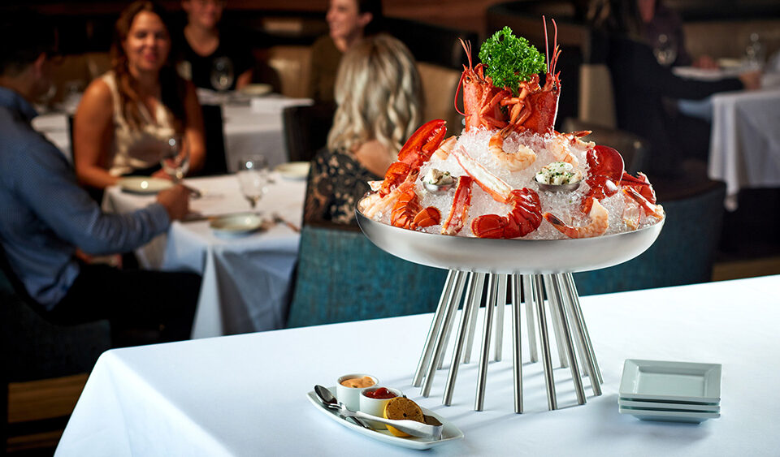
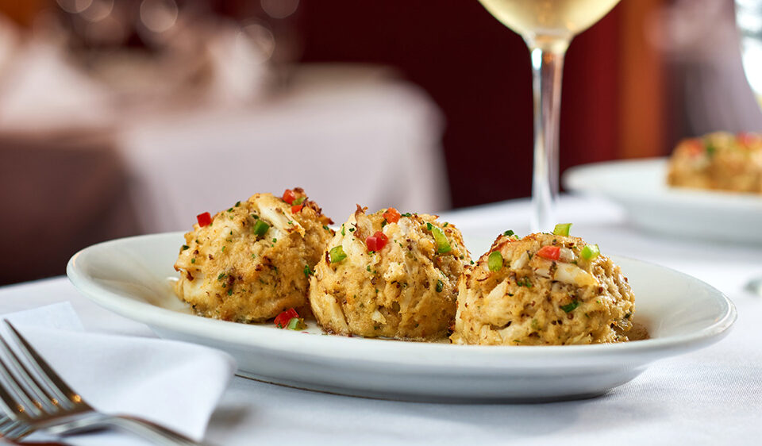
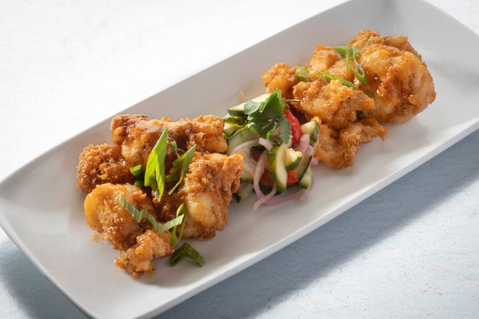

At Ruth's Chris, your last bite is just as good as your first. Our perfected broiling method and seasoning techniques ensure each cut of USDA Prime beef we serve arrives cooked to perfection and sizzling on a 500° plate—just the way Ruth liked it.
New York Strip - 16 oz USDA Prime, richly flavored, slightly firmer
Petite Filet - The same incredible cut as the classic, in an 8 oz filet
Cowboy Ribeye - Bone-in 22 oz USDA Prime cut
Filet - An 11 oz cut of tender, corn-fed midwestern beef
Ribeye - 16 oz USDA Prime, marbled for flavor & deliciously juicy
Petite Filet & Shrimp - Two tender 4 oz medallions with six large shrimp
T-Bone - Full flavored 24 oz USDA Prime cut
Porterhouse for Two - 40 oz USDA Prime, richness of a strip, tenderness of a filet
×
Seared Ahi Tuna
English cucumbers, complemented with mustard-beer sauce.
×
Mushrooms Stuffed with Crabmeat
Broiled & topped with Romano cheese.
×

Chilled Seafood Tower
Selection of shellfish & seafood, cocktail & sriracha-lime sauce.
×

Sizzling Crab Cakes
Two jumbo lump cakes, lemon butter.
×

Lobster Voodoo
Succulent lobster, lightly fried, tossed in a spicy cream sauce & served with tangy cucumber salad.